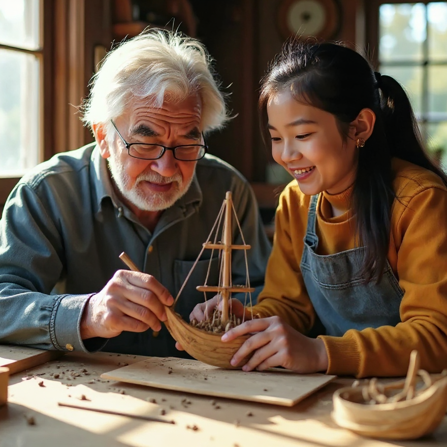

THE MODEL SHIPBUILDING WORKSHOP
Community
Join The Community
Interested in model boat building? Join the community to receive our monthly Newsletter filled with all things model boat building.
Featured Stories
Sydney Sails
Bob's early memories and the hobby he shares with his grandaughter.
Crossing the Strait
A dicey night on rough seas inspired Gerard's first build.

Sailing Solo
Kathy shares her solo sailing adventures and the builds that followed.

St Elmo's Fire
How a rare weather phenomenon sparked more than just an interest in model boats.